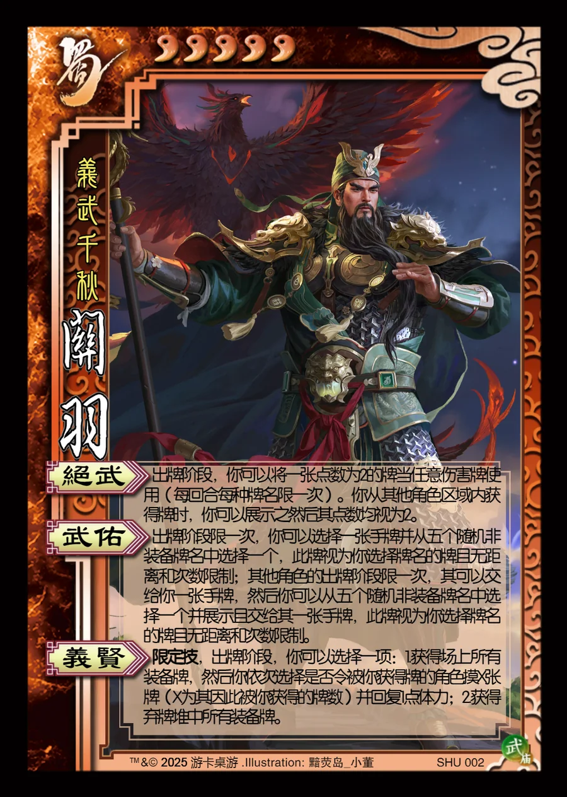

点击卡面查看大图
蜀
武关羽
♥5义武千秋
绝武
出牌阶段，你可以将一张点数为2的牌当任意伤害牌使用（每回合每种牌名限一次）。你从其他角色区域内获得牌时，你可以展示之然后其点数均视为2。
武佑▶ 模拟器
出牌阶段限一次，你可以选择一张手牌并从五个随机非装备牌名中选择一个，此牌视为你选择牌名的牌且无距离和次数限制；其他角色的出牌阶段限一次，其可以交给你一张手牌，然后你可以从五个随机非装备牌名中选择一个并展示且交给其一张手牌，此牌视为你选择牌名的牌且无距离和次数限制。
义贤限定技
限定技，出牌阶段，你可以选择一项：1.获得场上所有装备牌，然后你依次选择是否令被你获得牌的角色摸X张牌（X为其因此被你获得的牌数）并回复1点体力；2.获得弃牌堆中所有装备牌。